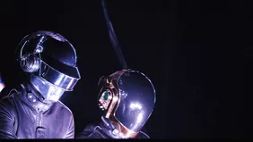
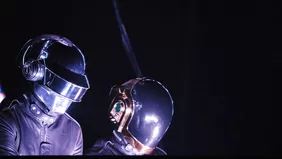
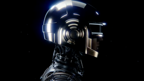
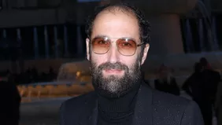

JO 2024 : La cérémonie se fera sans les Daft Punk
«Je respecte cette décision et m'excuse de l'ambiguïté de mes propos», a déclaré Thomas Jolly après avoir annoncé que les Daft Punk avaient décliné sa proposition.
«Je respecte cette décision et m'excuse de l'ambiguïté de mes propos», a déclaré Thomas Jolly après avoir annoncé que les Daft Punk avaient décliné sa proposition.
Dix ans après la sortie de Random Access Memories, les Français ont proposé une réédition assortie d'un nouveau titre atmosphérique.
Le musicien laisse l'électro de côté pour sortir vendredi un album de musique symphonique. L'œuvre a été composée pour un ballet chorégraphié par Angelin Preljocaj et joué l'an dernier à l'Opéra de Bordeaux et au théâtre du Châtelet.
Le Festival international de la bande dessinée d’Angoulême annonce, vendredi 15 décembre, avoir nommé Thomas Bangalter, cofondateur des Daft Punk, président du grand jury de l'édition 2024.
Thomas Bangalter, avant tout connu pour avoir représenté le groupe Daft Punk entre 1993 et 2021 avec Guy-Manuel de Homem-Christo, est un artiste qui s'est "concentré principalement depuis trente ans sur les rapports entre l’humain et la technologie", expliquent les organisateurs du festival dans leur communiqué. Il a aussi été promu Chevalier des Arts et Lettres en 2010, rappelle le festival. Thomas Bangalter n'est pas que musicien, il est aussi directeur de la photographie.
C’est fini après 28 ans
Ils se sont montrés dans leurs tenues typiques, avec casques argent et or sur la tête, en plein désert, façon Electroma (2006). Dans une mise en scène sobre, les deux collaborateurs de longue date se sont filmés en train de rompre. C’est Thomas Bangalter qui est parti au loin tandis que Guy-Manuel de Homem-Christo a actionné un chronomètre. A l’issue du compte à rebours, le mari d’Elodie Bouchez a explosé avant qu’un plan plus large ne montre l’horizon.
Cette vidéo, qui n’a pas tardé à devenir virale présente les dates du groupe 1993-2021, comme une épitaphe, avec deux mains que se rejoignent pour former le triangle symbolique qui les suivait pendant leurs concerts. Leur représentant a confirmé à Variety la fin du groupe.
Au cours de leur carrière au sommet, les deux hommes, qui ont toujours souhaité garder l’anonymat ont marqué l’Histoire. On pense bien sur à la sortie de leurs 4 albums cultes : « Homework », « Discovery », « Human After all » et « Random Access Memories », mais aussi de leurs 2 albums live, « Alive 1997 », et « Alive 2007 », sans compter une bande originale du dessin animé de Disney, « Tron », et des collaborations de luxe avec Pharrell Williams, Kanye West, et plus récemment The Weeknd.
Un duo qui a marqué l’Histoire
Côté vidéo, le tandem a également été gâté. Outre le clip réalisé par Michel Gondry de « Around The World », une série de dessins animés ont été créés pour eux par Leiji Matsumoto, dessinateur d’Albator pour l’album « Discovery », repris dans le film « Interstella 5555 ».En 2015, pour leurs 20 ans de carrière, ils avaient fait l’objet d’un documentaire : « Daft Punk Unchained ».